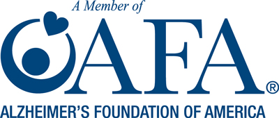

Media Section
Press Kit
The links below is to our STC Press Kit
It will download to your desktop as a zipped file. To read these files you will need: Adobe Acrobat Reader this is a free progrom to download. You must then unzip it to read it.
Click to read our Press Kit as a PDF
Click to download our Press Kit as a zipped folder with multiple files
Just want the Speaker Flyers for your event? Click to downolad two zipped flyers
Summary of Print Media
Some of these articles appeared in print and in the publication’s online editions.Those articles may be read in our articles about Share The Care™ below.
The New York Times
The Wall Street Journal
TAKE CARE! (National Family Caregivers Association Newsletter)
Natural Transitions (Sheila contributed 5,000 word article)
MidWeek Kauai
Garden Island - Life Style
Kauai
Our Town, NYC
The Week
The Library Journal
Good Housekeeping
Modern Maturity
The Washington Post
Redbook
Parade Magazine
The Washingtonian
The Santa Fe Reporter
The Orange County Register
Women’s Health Partners USA – Be Well
Natural Health
GoodMedicine (Australia)
Caring Today
CelebStaff
Daily Repostitory
Cincinnati Enquirer
The Mautner Project
Television Interviews
OzarksFirst News
CBS – The Talk
AMERICA’S HEALTH – ORLANDO, FL.
“ASK THE DOCTOR”
“ASK THE OB/GYN”
HOME AND FAMILY CHANNEL – L.A., CA.
FOX 5 NEWS with Lyn Brown
Podcasts of Radio Interviews
eCARE DIARY – Interview 07/1/2014
Current Health Podcasts at Blog Talk Radio with Empowering Family Caregivers on BlogTalkRadio. Topic: Living Alone and What To Do When You Have No One To Care For You
THE CAREGIVER HOUR WITH KIM LINDER – 10/21/13
The Dr. Fritz Show – “Live” Thursdays @ 10 pm EST on 1600 WWRL
Click to listen to these particular shows featuring STC:
Episode 52: “Maintaining the Emotional” 11/8/12
This is part three of a seven part series sponsored by Emblem Health. During this episode we are talking about emotional aspects of being a family caregiver. We are joined by Catherine Thurston,the Senior Director for Programs at Services & Advocacy for Gay, Lesbian, Bisexual & Transgender Elders (SAGE) and Rev. Robert Chase, the executive director of Intersections International.
Episode 50: “Maintaining the physical”- 10/25/12
Are YOU a Family Caregiver? If you provide regular and unpaid care to a loved one, YOU are a caregiver. We are joined this week by Sheila Warnock author of Share The Care and Dr. Robin Finley from the Department of Aging. This is the second of a seven part series sponsored by EmblemHealth focused on caring for the family caregiver.
Episode 47: “Caring for the family caregiver” – 10/4/12
We are joined this week by Gregory Johnson of EmblemHealth to talk about family caregiving. This is the first of a seven part series sponsored by EmblemHealth focused on caring for the family caregiver.
Hear Sheila Warnock’s interview with Brad Saul on his webtalk radio program: “OPERATION: NEVER FORGET – “SHARE THE CARE”
Hear Sheila Warnock interview (#110) with Starr & Bob Calo-oy on their radio program Enter 110 into the red box on the left sidebar. “Caregiving 101” on KKYX (Texas) podcast
Summary of Older Radio Interviews
America Talk Radio with Andrea Star
The Darell Ankarlo Show (NYC) (Success Radio, NYC)
Capitol Viewpoint (WRC-AM, Silver Springs, MD)
National Public Radio
Summary of Presentations
Share The Care™ Educational Program Click to download as a PDF ShareTheCaregiving, Inc. Full Day Share The Care™ Professional Trainings
Honolulu, Hawaii – Share The Care™ Training sponsored by Department of VA Affairs
Pacific Islands Health Care System
May 23, 2013
Full day training for 56 VA hospice/Palliative Care and other local health professionals and clergy at The Oahu Veterans Center
Springfield, Mo – Share The Care™ Training for professionals sponsored by Mercy St. John’s Hospital
January 24, 2012
Full day training for 45 professionals and clergy
Kauai Island Share The Care™ training sponsored by Kauai Hospice – Kauai, Hawaii
January 12, 2012
Full day training for 54 professionals and Volunteers
Share The Care™ training for GWAAR STC Station Program – Steven’s Point, WI
July 13, 2011
Full day training for 50 professionals
Monterey Country Share The Care™ Pilot Program – CSU at Monterey Bay, CA
Feb. 10, 2011
Full day Training for 61 high level professionals and clergy
Share The Care™ Training – Penn Yan, NY
May 25, 2010
Full day training for Yates county professionals/clergy
Share The Care™ Training and “Let’s Get Started” Caregiver Workshop – Newmarket, Ontario
March 11-12, 2010
Full day training
3 hour Workshop for Caregivers and Concerned Friends
Share The Care™ Trainings – South West Ontario
Sept. 29, Oct. 1, 27, 29, 2009
Full day Trainings in Owen Sound, Mitchell, London and Chatham for health professionals & clergy. This was start of 18-month STC initiative.
Share The Care™ Training – Anchorage, Alaska
August 21, 2009
Full day Training for health professionals and clergy
ShareTheCaregiving’s Third NYC Program – Share The Care™ NYC Training New York City, NY
May 28, 2009
Full day Training for health professionals and clergy
ShareTheCaregiving’s Second NYC Program – Share The Care™ NYC Training, New York City, NY
October 30, 2008
Full day training for health professionals and clergy
Wellmont Healthcare Systems / ALS Association – Tennessee Chapter Bristol, TN
May 22, 23, 2007
Speaker for caregivers / health professionals / Full day training for professionals
ShareTheCaregiving and St. Vincent’s Hospital – Share The Care™ NYC Training New York City, NY
March 31, 2007
Full Day training for health professionals & clergy
Sharon S. Richardson Community Hospice, Sheboygan Falls, WI
Feb. 22, 2007
Full day training for staff and volunteers
Jewish Home & Hospital – Lifecare Plus, New York, NY
Jan. 16, 2007
Full day Training staff of Lifecare Plus Program work (with older population)
Woodward Respite Care Fund, Denver, CO
September 21, 2006
Full day Training for 50 health professionals and clergy
Spencer Crawford Children’s Foundation, Coral Springs, FL
July 29, 2005
Full day training for staff of the foundation
Focus on helping the parents of children who are seriously ill
Training for Health Professionals/Clergy, Greensboro, VT
May 5, 2005
Full day seminar sponsored by Area Agency for Northeastern VT,
Northeastern Vermont Area Health Education Center, Northeastern VT
Regional Hospital, North Country Hospital, Northern Counties Health Care Inc.
Training for Health Professionals and Clergy, Rutland, VT
June 10, 2004
Full day seminar sponsored by Rutland Regional Medical Center, Rutland Area Visiting Nurse Service, Southern Vermont Area Health
Keynotes, Major Conference Presentations & Workshops
Family Caregiving Summit – New York Academy of Medicine – NY, NY
April 30, 2014
Featured speaker
Family Caregiving Summit – Fordham University – NY, NY
June 10, 2013
Featured speaker
NYC Partnership for Family Caregiving Corps – EmblemHealth - NY, NY
August 22, 2012
Featured speaker
4th Annual On Lok Conference – San Francisco, CA
Sept. 21, 2011
Featured Conference Speaker
Aging in America Conference – San Francisco, CA
April 28, 2011
Workshop Presentation
Carmel Foundation – Carmel, CA
February 9, 2011
Presentation for invited guests – prelude to training 2/10/11)
13th Annual Aging Concerns Unit Us Conference – Albany, NY
June 2-3, 2009
Workshop Presentation
2009 Oregon Association of Home Care Conference – Salem, Oregon
March 5, 2009
Keynote speaker for health professionals
8th Annual Gulf Coast Home Care Conference – Point Clear, AL
June 10, 2008
Workshop presentation for health professionals
Long Term Care Association of Manitoba 8th Annual Conference – Winnipeg, Manitoba
May 27, 2008
Speaker – 250 health professionals
Ontario’s Ministry of Health and Local Health Integration Network’s Aging At Home Conference – Toronto, Ontario
April 23, 2008
Keynote speaker – 700 health professionals
Council of Senior Centers and Services of NYC – The Power of Aging Conference – New York City, NY
January 24, 2008
Workshop presentation hosted by NYC Family Caregiver Coalition
Alzheimer’s Association Greater Michigan Chapter and Upper Peninsula Region Marquette, MI
August, 23, 2007
Keynote speaker and workshop for 100 health professionals / clergy / caregivers
Robert Wood Johnson University Hospital – Caring For You, Caring For Me Conference – New Brunswick, NJ
May 19, 2007
Speaker for caregivers conference
Joint Conference of the American Society on Aging and The National Council on Aging – Chicago, IL
March 8, 2007
Workshop presentation of Share The Care™ with Claire Culbertson, MPH
HOPE – Hospice & Palliative Care Conference – Wisconsin Rapids, WI
Nov. 9, 2007
Plenary speaker for 250 health professionals
Jewish Home and Hospital, New York, NY
September 8, 2006
Presentation/training for selected supervisory staff
National Hospice and Palliative Care Conference on Volunteerism & Family Caregiving – Denver, CO
July 29, 2006
Workshop presentation on Share The Care™ model
MDA/ALS Symposium – Beaverton, OR
October 29, 2005
Featured speaker for 100 patients with ALS and their caregivers
United Nations – New York, NY
October 14, 2004
Sponsored by the United Nations Caregivers Support Group
Presented lecture on Share The Care™ to caregivers from many nations
ALS Caregivers Conference, The Carolinas Medical Center for Neuromuscular Disease – Charlotte, NC
October 18, 2003
Keynote speaker. Presented the Share The Care™ system and benefits of group caregiving to ALS patients and their caregivers and families.
Caregiver’s Forum, Mission Inn, Orlando, FL
September 24, 2003
Sponsored by Share The Care™ Foundation of Orlando, FL (not related to Share The Care™ handbook or ShareTheCaregiving, Inc.)
Keynote speaker on the benefits of group caregiving to 250 caregivers
9th Annual Patient Conference: Living Fully with Cancer
1997 MD Anderson Network
Workshop presentation
NYU Guest Lectures
Community Health
NCI Cancer Patients Education Network
7th Annual conference for Healthcare Professionals at Sloan-Kettering
Click to read these articles:
Wall Street Journal Marketwatch: May 21, 2014
Article by Elizabeth O’Brian, Reporter, Marketwatch
Skype Interview 10/13
Watch Sheila’s recent interview with Barbra Levin, Executive Director of NF Inc., Mid-Atlantic, a wonderful organization that brings awareness, support and education about Neurofibromatosis.
The Huffington Post- Healthy Living – September 26, 2012
The Gift of Caregiving An Article by Robin Amos Kahn Click here to read the article.
Lady Godiva Honorees – 2012
OzarksFirst: January 2012
L’Oreal Paris Women of Worth – 2011
Huffington Post – Marlo Thomas Article
ECareDiary – interview
Barrie Louise Switzen’s – The Woman’s Connection
The New York Times, August 26, 2005
By Jane Gross
Read the Share The Care™ blurb: ‘Where to Get Help in Planning for Illness’ Read the rest of the article: ‘Alone in Illness, Seeking Steady Arm to Lean On’
The Wall Street Journal, August 21, 2005
Wall Street Journal – Sunday Online by Kelly Greene ‘Caregiving, in a Team’
Share The Care™ An Article by Sheryl Karas, MA
Del Mar Caregiver Resource Center
Share The Care™ Teaches Team Care For Friends In Need
Community willing to Share The Care™ in Times of Trouble
The MDA/ALS Newsletter
It takes a Village to Fight the System
The Washington Post
1996 by Barbara Mathias
Friends in Deed (Read the article as a PDF)
DVDs
Available for purchase: two Share The Care™ groups in Action (total 10 minutes)
$10.00 US plus shipping: info@sharethecare.org
Michelle’s Group – Produced by the Univeristy of Wisconsin Comprehensive Cancer Center: during a Share The Care™ Program for women with breast cancer.
Pegs Leg’s – a public service video for ALS patients that was included on the documentary Courage To Live by Don Mapes.
Organization Resource Partnerships
NEW YORK CITY PARTNERSHIP FOR FAMILY CAREGIVING CORPS
http://www.corporatecaregivers.com
THERAVIVE
Theravive is a network of therapists and counselors ready to meet your personal and family needs. We will help you search for and find a qualified and specialized therapist in your area. To get started visit theravive.com and enter your location.
ALZHIEMER’S FOUNDATION
ShareTheCaregiving (Share The Care™) is a member of the Alzheimer’s Foundation
SEED
Seed is a not-for-profit organization that provides catalytic coaching services and cost-effective tools to community-serving organizations.
ZWEENA HEALTH
Zweena Health is a personal health record (PHR) service provider that contacts healthcare providers and collects, digitizes & securely stores your health records for you. Scanned records (complete with doctor’s notes) are uploaded and then transformed into easy-to-read charts and graphs. All available 7/24/365 online on a computer or mobile device.To get started visit zweenahealth.com